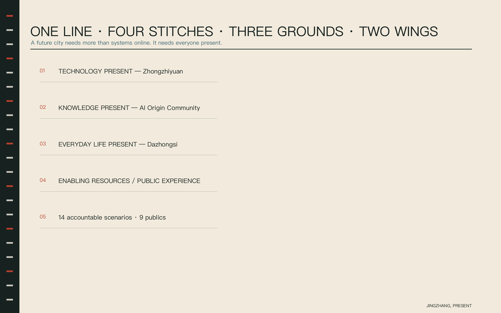
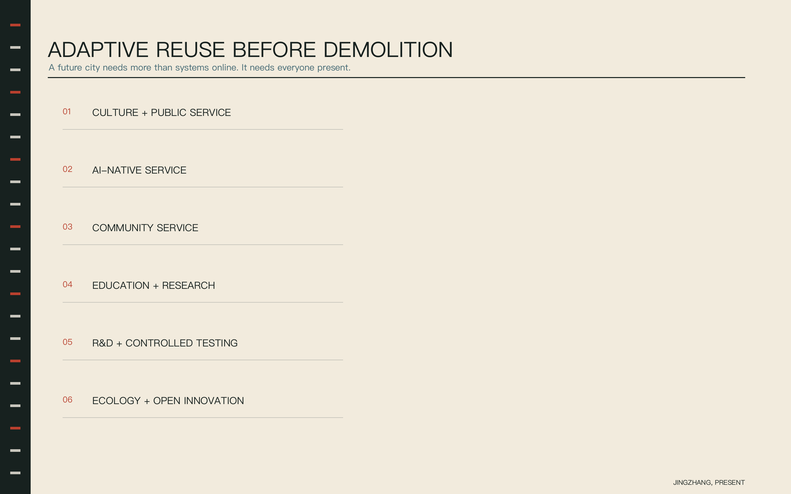
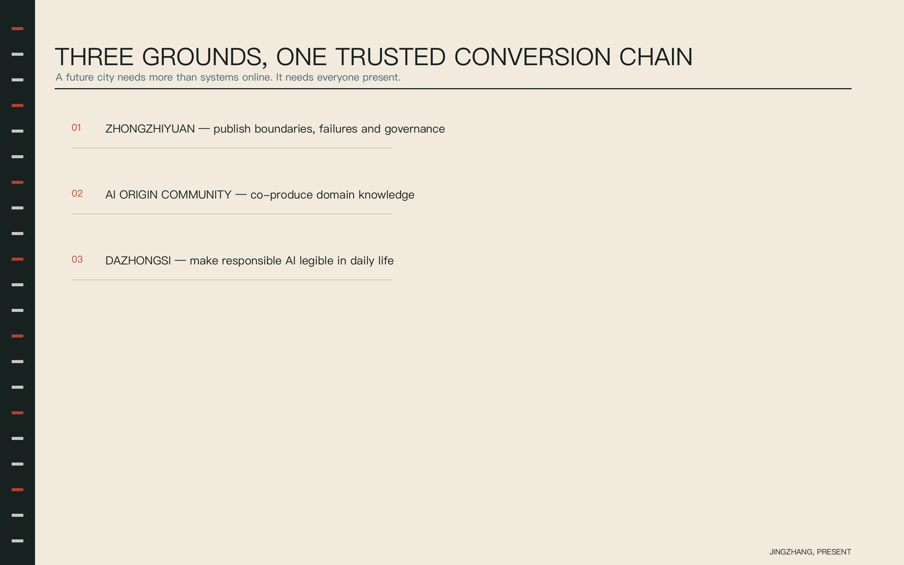
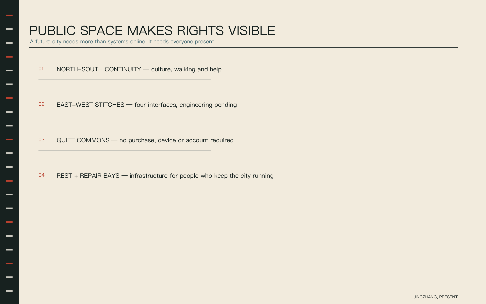
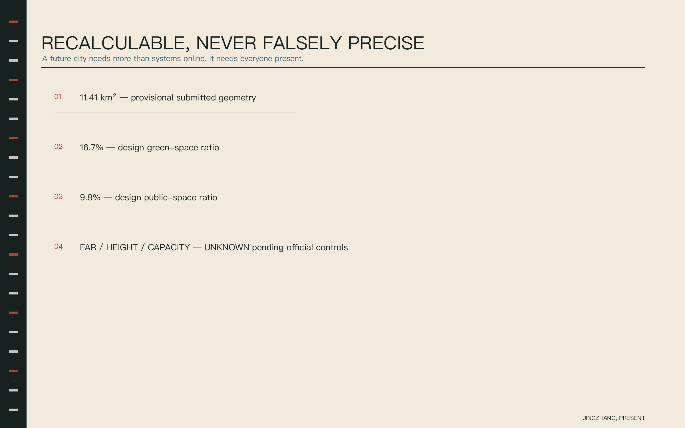
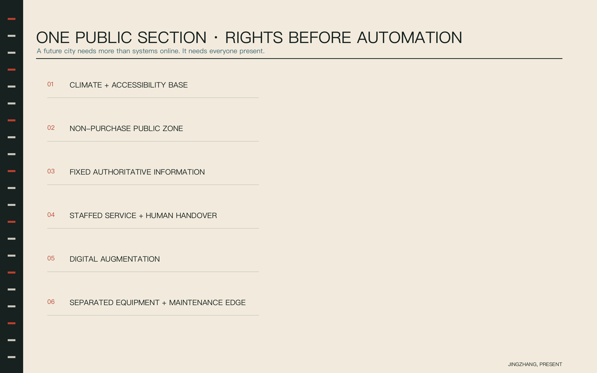
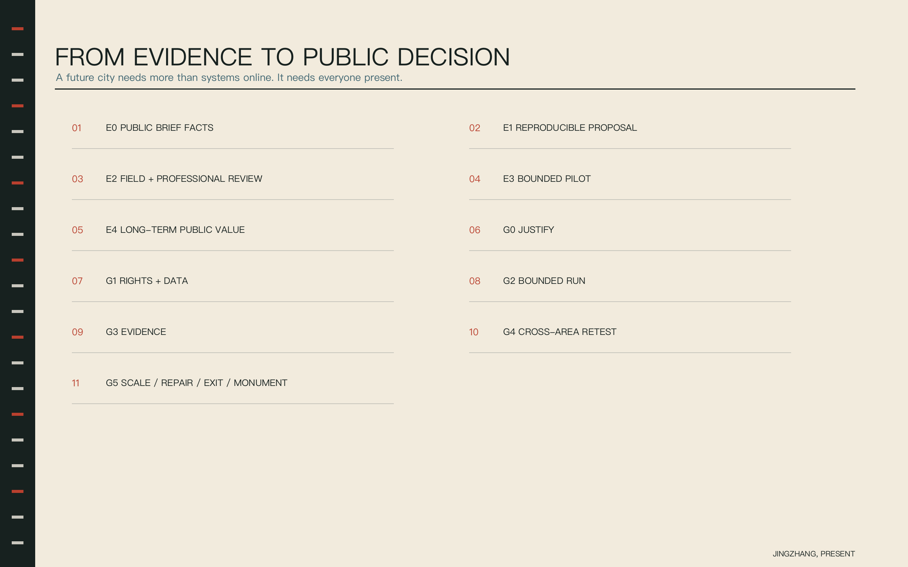

Task coverage
Six agent tasks, three planning scopes, three areas and two wings, fourteen scenarios and long-term operations have traceable evidence.
CENTENNIAL JINGZHANG AI INNOVATION BELT
A future city needs more than systems online. It needs everyone present.
EVIDENCE OVERVIEW
Key areas, land use, building and renewal types, mobility, blue-green public space and AI scenarios are derived from one evidence package.







Six agent tasks, three planning scopes, three areas and two wings, fourteen scenarios and long-term operations have traceable evidence.
Spatial topology passes; provisional geometry is visibly downgraded; statutory intensity remains unknown.
Regulatory controls, roads, ownership, heritage, utilities and implementing entities await official data and professional confirmation.
THE PRESENCE CONTRACT
Every scenario publishes eight fields. Without human stop authority, an equivalent non-AI service and an accountable operator, it cannot enter real-city testing.
THREE GROUNDS · TWO WINGS
Publish capability boundaries, failure samples, energy and governance.
Universities, communities and domain experts co-author city problems.
Product passports, multilingual service and an everyday-life ground floor.
FOURTEEN ROLL CALLS
Zhongzhiyuan | Professional approval; public one-click exit
STOPUnlicensed data or an unexplained safety event
Zhongzhiyuan | A safety officer holds a physical emergency stop
STOPTwo boundary breaches or emergency-stop failure
Zhongzhiyuan | A facility engineer approves every mode change
STOPThermal safety threshold anomaly
AI Origin Community | Domain experts retain publish and withdrawal authority
STOPUnknown provenance or licence conflict
Belt-wide | Disabled users co-verify; maintainers close tickets
STOPSuggested route conflicts with field conditions
Belt-wide | A human service officer owns the final answer
STOPPolicy version is unknown
AI Origin Community | Residents choose issues; teachers review methods
STOPIndividual opinion is inferred as a group profile
AI Origin Community | Clinical staff confirm referral and risk advice
STOPDiagnostic output or a high-risk symptom
AI Origin Community | Teachers or guardians select and correct
STOPDependency inducement or unrelated child data
Xiaoyuehe Wing | Rider and recipient confirm together
STOPData becomes hidden worker performance scoring
Dazhongsi | Merchants sign; consumers can appeal
STOPUndisclosed supplier or exaggerated capability
Railway Heritage Park | Historians and narrators retain revision rights
STOPConflicting historical evidence is unmarked
Dazhongsi | A lawyer or public legal-service officer reviews
STOPA definitive legal conclusion is generated
Belt-wide | Both shifts confirm each item and may reject it
STOPAdvice is used for individual performance monitoring
E0–E4 · G0–G5
Nine action packages, six public decision gates and six resource accounts turn implementation into a stoppable, repairable and reversible evidence flow.
90-DAY PILOT
Nine publics co-write contracts and baselines.
AI and non-AI services run in parallel.
Failures are published before promotion.
Scale-up requires a new review.